Everything you can do in NovaHR
A start-to-finish guide to running your people and payroll on NovaHR, built for South African employers. Follow it in order to set up, or jump to any section when you need it.
1Getting started
Create your workspace, understand what each person sees, and find your way around.
Create your company
NovaHR is self-service. From the sign-up page you create your workspace (your company), your own HR administrator account, and a first scheduled pay run in one step. Your workspace starts on a free trial; you can add a plan later under Billing (see section 12).
- Go to the sign-up page and enter your company name, your name, work email and a password.
- Confirm your email address from the message we send you.
- You land on the Dashboard with a Getting started checklist that walks you through the first five tasks.
The dashboard and how to move around
The dashboard is your home base. The left rail is your main navigation and it changes with your role, so people only see what they are allowed to use.
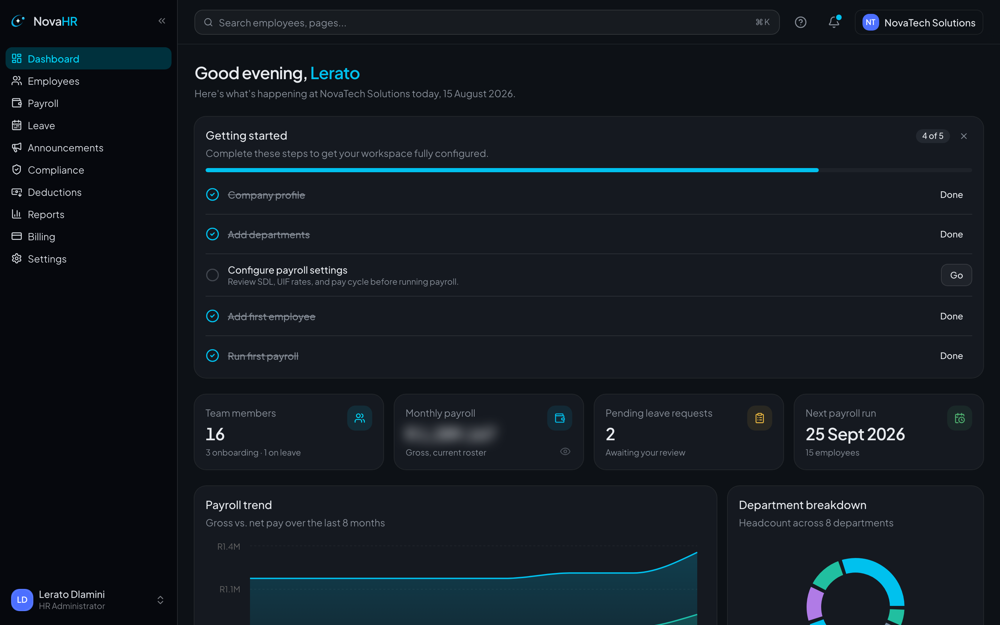
Who sees what: the four roles
Every person in NovaHR has one role per workspace. Navigation and data adapt automatically.
| Role | Best for | Can do |
|---|---|---|
| HR administrator | People and payroll owners | Full access: employees, payroll, leave, compliance, reports, settings, billing. |
| Manager | Team leads | Their own record plus their direct reports: approve leave, run reviews, view their team. |
| Employee | Everyone | Self-service: profile, payslips, tax certificates, leave requests, documents. |
| Executive | Owners and exco | Read-only oversight across the company: dashboards, reports, headcount and cost. |
Your profile and two-factor authentication
Open your name at the bottom of the left rail, then Account, to edit your name, job title and avatar colour, change your password, or turn on two-factor authentication.
- On the Account page, find Two-factor authentication and choose Enable.
- Scan the QR code with an authenticator app (or type the secret in by hand).
- Enter the six-digit code to confirm. You can turn it off again from the same place.
2Setting up your company
Configure NovaHR once so that payroll, leave and compliance behave the way your company works. Everything here lives under Settings.
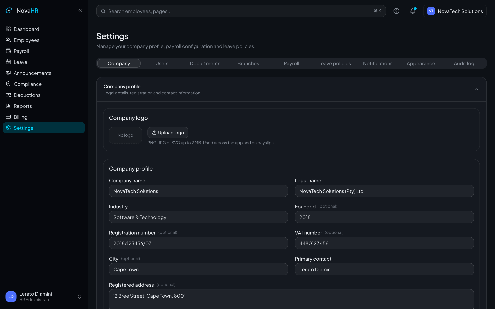
Company profile and structure
- Company profile: legal name, trading name, contact details and logo.
- Branches, departments and cost centres: build your structure so employees, pay groups and reports can be scoped to a branch or department.
- Position catalogue: job titles that suggest themselves when you add or edit an employee.
Statutory references
Capture your PAYE, UIF and SDL reference numbers and confirm the tax tables and rates. NovaHR ships with the current South African tax tables already loaded and validated.
Leave policy
Set how leave works for your company. NovaHR follows the Basic Conditions of Employment Act (BCEA) out of the box, and every value is configurable.
- Entitlement days per leave type (annual, sick, family responsibility, and so on).
- Annual leave method: accrue monthly or grant upfront, with carryover and a carryover cap.
- Sick-note threshold: the number of days after which a medical certificate is required.
- Employer-paid family leave: maternity, parental, adoption and commissioning leave default to unpaid by the employer (claimed from UIF). Toggle any of them to paid if you offer it as a benefit.
- Public holidays and a birthday calendar, including custom company holidays.
Pay frequencies and pay groups
Add the pay frequencies you use (monthly, fortnightly, weekly). Later you can scope a pay run to a branch and a frequency so that, for example, weekly and monthly staff run separately. See section 6.
Payslip studio
Brand your payslips with your logo, colours and layout so the PDFs your team downloads match your company.
3Adding & managing employees
Add one employee at a time with the guided wizard, then keep a rich, South-African-aware record for each person.
Add an employee
Open Employees and choose Add employee. The wizard has four steps, each validated before you continue.
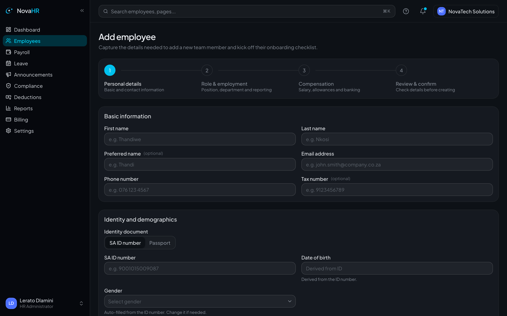
- Personal details. Name, contact, and identity. Enter a South African ID (date of birth and gender fill in automatically) or switch to Passport to capture nationality and date of birth. Choose from South-African-context dropdowns for gender, marital status and qualifications.
- Role & employment. Job title, department, branch, reporting line, employment type (full-time, part-time, fixed-term, temporary, casual, learnership, internship) and start date. Probation defaults to three months and is editable.
- Compensation. Salary, pay frequency, allowances and banking details.
- Review & confirm. Check everything, then create the employee and start their onboarding checklist.
The employee record
Open any person from the Employees list to see their full record.
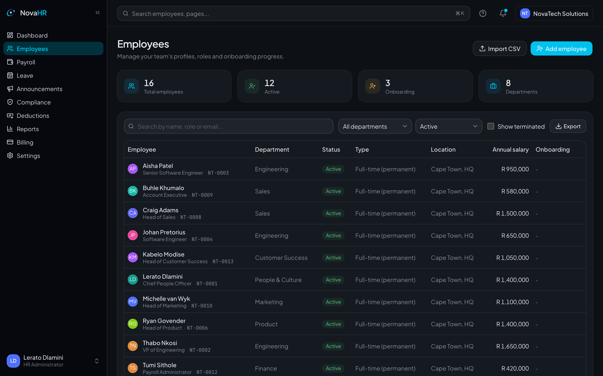
Each record holds far more than the basics:
| Area | What it captures |
|---|---|
| Personal & identity | Contact, residential address, next-of-kin, emergency contact, tax number, SA ID or passport. |
| Demographics | Employment-equity fields: race, gender, occupational level, foreign national, disability. |
| Qualifications & skills | Structured qualifications (type, institution, year, expiry), skills, languages, and your own custom fields. |
| Probation | Default three-month probation with an editable end date and confirm-or-extend reminders. |
| History timeline | Promotions, transfers and salary changes captured automatically when you edit the record. |
| Documents vault | Private, per-employee files with categories, expiry dates and version history (section 8). |
Directory and organisation chart
The Employees area includes a searchable directory and a clickable organisation chart built from reporting lines, so you can see the whole company at a glance.
4Bulk onboarding (CSV import)
Moving a whole team onto NovaHR? Import everyone at once from a spreadsheet instead of adding people one by one.
- Go to Employees and choose Import (top right of the list, see Figure 3.2).
- Download the CSV template. It has a column for every field NovaHR expects, in the right order.
- Fill in one row per employee in Excel, Numbers or Google Sheets, then save as CSV.
- Upload the file. NovaHR validates every row and shows you exactly which cells need attention before anything is created.
- Fix any flagged rows in your spreadsheet and re-upload, then confirm to create all the employees at once.
5Leave management
Request, approve and track leave against a South African statutory framework, with balances and a calendar everyone can see.
Request leave (employee)
- Open Leave and choose New request.
- Pick the leave type (annual, sick, family responsibility, maternity, parental, adoption, commissioning, study or unpaid).
- Select your dates on the day-picker. You can choose half-days and non-contiguous dates; weekends and public holidays are handled for you.
- Add a reason or note if needed and submit. NovaHR checks your balance and warns you before you go negative.
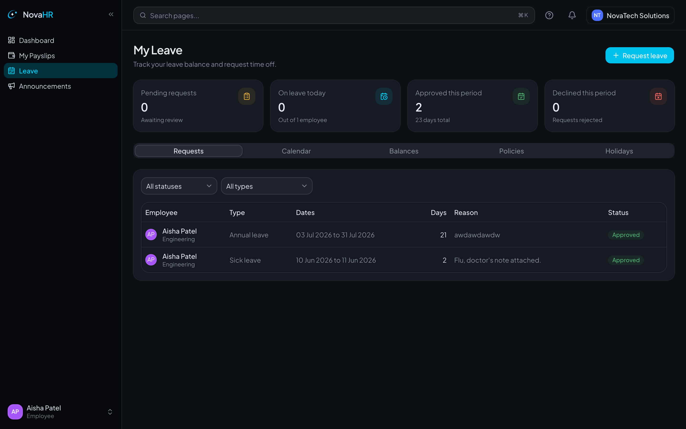
Approve or decline (manager)
Managers see their team's requests under Leave. Approvals can route through more than one reviewer if your company requires it.
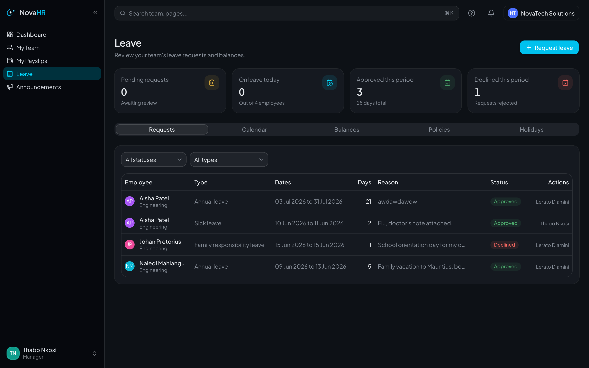
- Open a pending request, review the dates and balance, then approve or decline with an optional note.
- Employees can cancel a request they no longer need.
- A leave calendar and a balances table show who is away and how much each type they have left.
Leave encashment
HR can pay out unused annual leave mid-employment. The amount is added to the open pay run and the employee's balance is reduced automatically. On termination, leave can be encashed as part of final pay (section 9).
6Running payroll
A full South African PAYE engine with a clear run lifecycle: schedule, add variable pay, approve, complete, lock and publish.
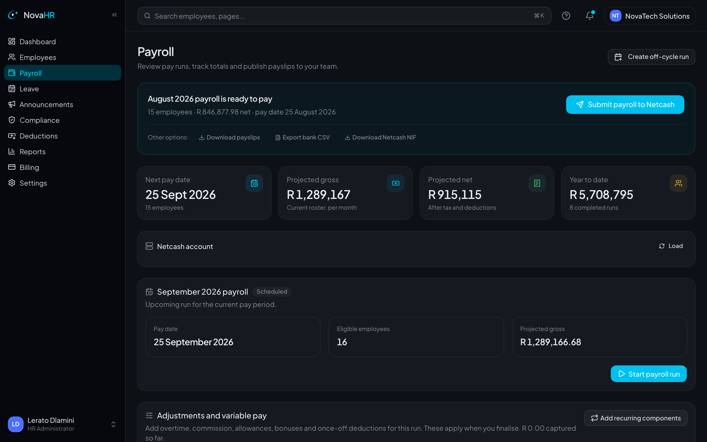
The run lifecycle
- Schedule & start. A run is created for a pay period. Open it to begin. You can scope it to a pay group (a branch and/or a frequency) so weekly and monthly staff run separately.
- Add variable pay. On top of each person's regular pay, add overtime (1.5× or 2×), Sunday and public-holiday time, night-shift and standby allowances, commission, custom allowances, a bonus or thirteenth cheque, and any custom deductions. Import variable pay from a CSV template if you prefer.
- Apply recurring items. Recurring components you set on an employee (a standing allowance, for example) apply to the run in one click. Use the back-pay helper for arrears.
- Approve. Optionally route the run to an approver, who is notified by email.
- Complete. NovaHR calculates PAYE (annualised, with rebates and age thresholds), the medical-aid credit, pension and retirement-annuity within the statutory cap, UIF and SDL.
- Lock & publish. Lock the completed run, then publish payslips so employees can download them (section 7).
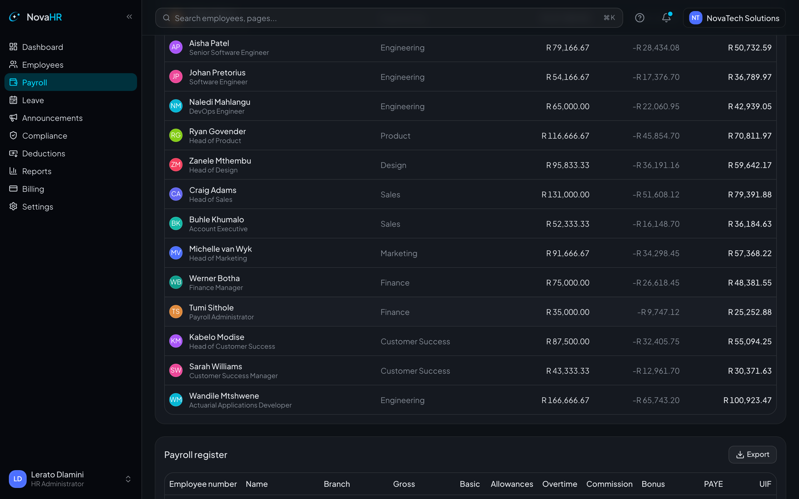
Off-cycle and corrections
- Off-cycle runs for a bonus or a correction finalise on their own, separately from the monthly run.
- A completed run can be unlocked and adjusted, or reversed, unless it is locked or already sent to the bank.
- Leave encashment and unpaid-leave deductions flow straight into pay.
Paying and reconciling
- Bank export for EFT, plus Netcash integration (validation, NIF file and batch submission).
- GL journal export and a payroll register in CSV or Excel for your accounting system.
7Payslips & self-service
Publish payslips for the team, and let every employee manage their own details, documents and tax certificates.
Publishing payslips
- After a run is completed, publish payslips to release them to employees.
- Download a single payslip or a bulk ZIP of every payslip in the run.
- Payslips carry your branding from the payslip studio (section 2).
What employees can do themselves
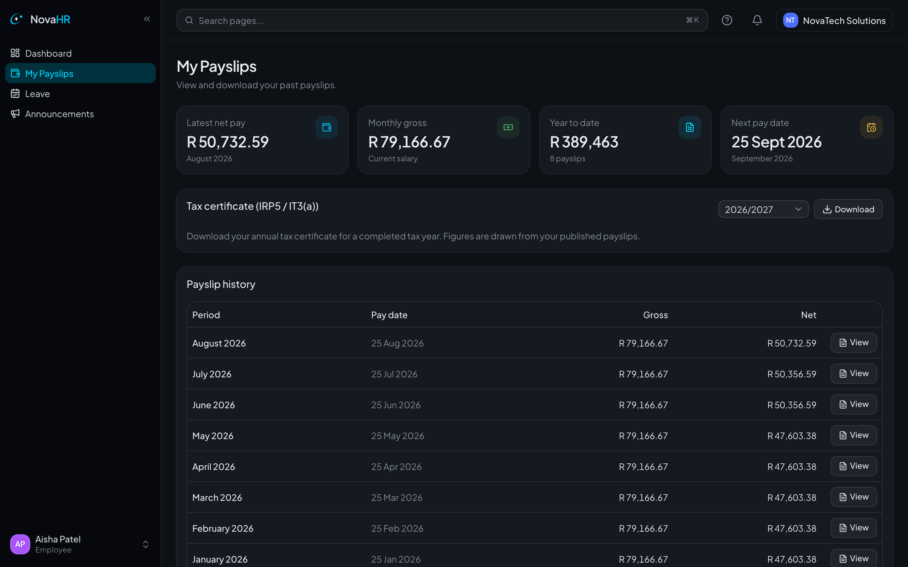
- Payslips: download any published payslip.
- Tax certificates: download their own IRP5 / IT3(a) once issued (section 10).
- Profile: keep contact details, address and banking up to date.
- Documents: view files HR has shared with them, with signed, private access.
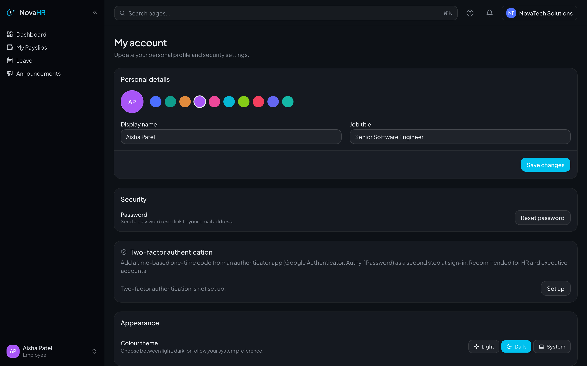
8Deductions, loans & documents
Track money owed and recovered over time, and keep every employee document safe with version history.
Deductions and loans
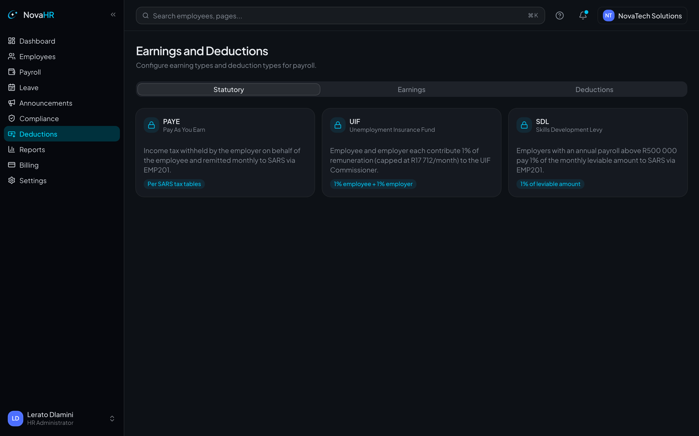
- Record loans and garnishees and track how much has been recovered against each.
- Set up recurring deductions that apply automatically each run.
- Deductions flow into payroll (section 6) and appear on payslips.
The documents vault
- Upload files per employee with categories and expiry dates.
- Access is private and signed, so only the right people can open a document.
- Version history: re-uploading a file with the same name supersedes the old one but keeps every prior version.
9Performance, discipline & exits
Run reviews, keep disciplinary records, and handle terminations with the right paperwork and final pay.
Performance reviews
- Run a review cycle with a one-to-five rating, strengths, areas to improve and goals.
- Managers review only their direct reports; the employee can acknowledge the review.
Disciplinary records
Log warnings, counselling and hearings against an employee, each with an issue date and an expiry date, so records lapse at the right time.
Terminations and final pay
- Start the termination flow on the employee record.
- Capture the termination and final-pay dates and the reason.
- Choose whether to encash outstanding leave on exit; it is added to the final pay.
- Generate the termination letter and any other letters you need.
All of this is captured on the employee's history timeline, so you keep a complete record.
10Statutory compliance
The South African statutory outputs you need through the year, from monthly declarations to year-end certificates.
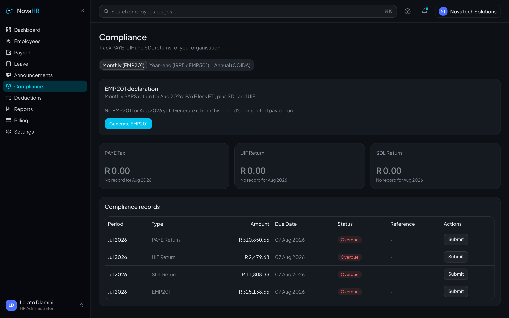
| Output | What it is |
|---|---|
| EMP201 | Monthly declaration of PAYE, UIF, SDL and ETI, with an on-screen panel and export. |
| EMP501 | Year-end reconciliation of what was declared against what was certified. |
| IRP5 / IT3(a) | Employee tax certificates: bulk PDF or ZIP for HR, and self-service download for each employee. |
| ETI | Employment Tax Incentive calculation and claim schedule. |
| UIF | UIF declaration export. |
| COIDA | Return of Earnings (W.As.8): actual versus assessable earnings per employee, with totals, in CSV or Excel. |
| Employment Equity | EEA2 workforce profile and EEA4 income differentials as on-screen tables and a statutory-style PDF. |
| POPIA | Data-subject handling helpers and the legal pages that back your privacy obligations. |
11Reports & analytics
See the shape of your workforce and your payroll at a glance, and export the detail when you need it.
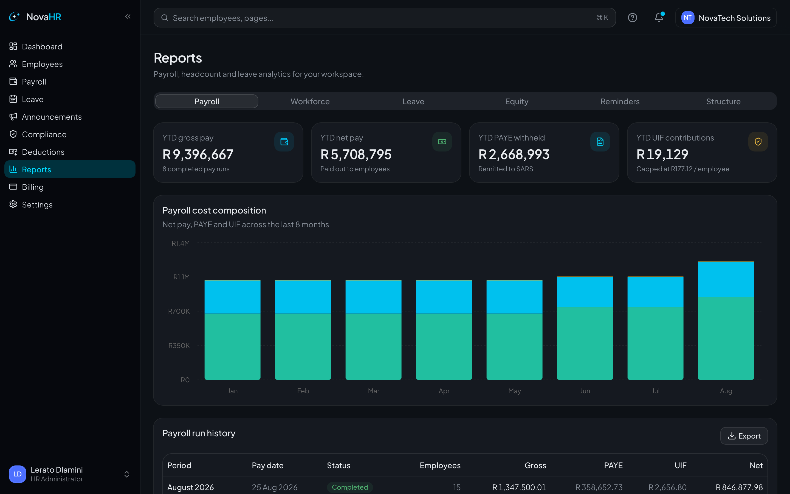
| Report | Shows |
|---|---|
| Payroll | Year-to-date gross, net, PAYE and UIF, run history and a composition chart. |
| Workforce | Headcount, department cost, budget utilisation and employment-mix charts. |
| Leave | Utilisation by leave type. |
| Equity | EEA2 and EEA4 tables with a PDF export. |
12Users, roles & billing
Invite your team, manage who can do what, work across multiple companies, and handle your subscription.
Inviting and managing users
- Invite people by email, one at a time or in bulk from the employee list.
- Each invite is a one-time secure link, delivered by email with a copyable fallback link. You can resend or revoke it.
- Change a person's role or remove their access at any time.
- For larger companies, create a branch-scoped admin: an HR user limited to a single branch.
Billing and subscription
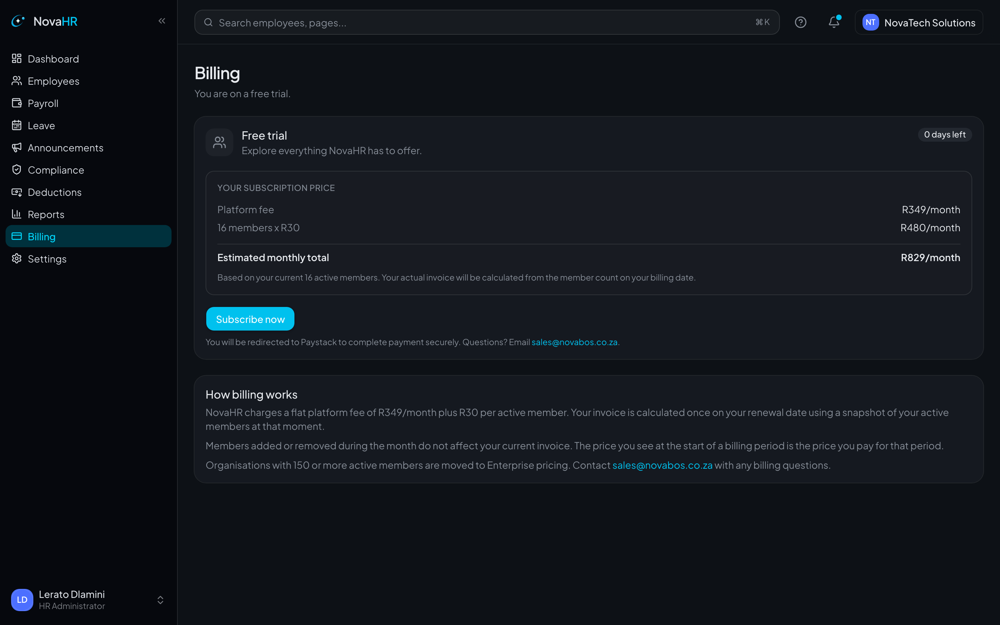
- Start on a free trial, then choose a plan when you are ready.
- Payments are handled securely through Paystack.
- Manage your plan and see your billing status from the Billing page.